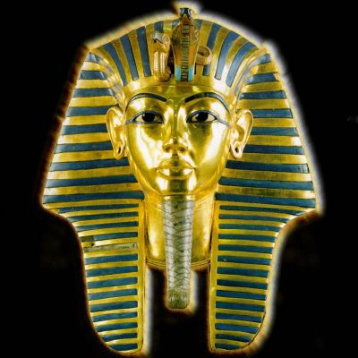

Английский оригинал этой страницы, изобилует фактическими ошибками и неточностями. По возможности, используйте другой ресурс, если вас интересует история древнего Египта. /Примечание редактора/.

Имя, наделённое смыслом
«Фараон» - слово, пробуждающее дух прошлого, похороненный в песках времени. Это слово родилось во времена пирамид, когда правление фараонов только началось. Почему это простое слово приобрело такой статус? Чтобы понять это, придется подойти к вопросу с научной точки зрения.
Греки произносили это слово на манер северных египтян – «фарао»; это звание, которое обычно обозначало главу окружения царя двух миров, другими словами – земного наследника Гора. Фараон («Фар-Ао») – это египетское слово «Пер-аа», «Перао», что означает «большой дом», то есть царский дворец. Этот «дворец» включал в себя всех чиновников древнего царства. В греческом языке слово исказилось, превратившись в «фараон», хотя происхождение его очевидно. Иудейский историк I в. Иосиф Флавий говорит нам, что в его время, также, как и сейчас ««Фараон» по-египетски значит «царь»».
С течением времени и развитием языка, слово, обозначавшее резиденцию царской власти, в конце концов стало обозначать саму власть. Это соответствует тому, как мы говорим «Белый дом», подразумевая президента, «Набережная Орсэ», имея в виду французских дипломатов, и «Ватикан» - говоря о папе. Точно так же слова «Высокая порта» («высокие врата») когда-то означали Оттоманскую империю. «Царский дворец» вскоре стал понятием, обозначающим «правящего царя», чьи символы власти всегда сопровождались девизом: «Жизнь, процветание, здоровье».
Впоследствии, вместо того, чтобы говорить «Царь Верхнего и Нижнего Египта» (как было принято в классические времена Египта), стали говорить P (h) er-aa’ плюс имя царя, и это стало устойчивым оборотом. Царь Аменемхет III, божественный царь XII династии, носивший царское имя Nymaatr’e в греческое время был известен как Porramanres Fayoum’а. Только начиная с XXII династии установилась форма «Фараон, жизнь, процветание, здоровье». С этого момента цари начинают терять свою славу и власть. По мере того, как фараоны теряли власть, а им на смену приходили жрецы, слово P (h) er-aa стало точным обозначением их роли.
Упоминается это слово и в Библии. В Пятикнижии любой египетский правитель называется «фараоном», на иврите – Pareoh.
Это слово исполнено смысла: в философской традиции оно стало синонимом слова "тиран" – в связи с историей евреев, преследуемых в пустыне армией египтян.
Если сегодня понятие "фараон" соотносится с египетским правителем практически без всякого подтекста, то слово «фараон» само по себе вызывает в нашей памяти образы величественного прошлого, волшебства и тайн. В этом случае «фараон» обозначает куда более таинственное понятие – древнего жреца и чародея.

Имя Солнца-Ра
Титул указывает на то, что царь - "сын Ра", и обозначает таким образом его божественное происхождение, устанавливает нерушимую связь с могущественным богом солнца. Титул обозначался иероглифом-уткой, который означал "сын", или "принадлежащий солнцу" (Ра). Затем шло имя фараона.
Примеры:
- Аменхотеп III – ‘sa ra imen hetep heqa Oaset’ – ‘Сын Ра, Амон доволен, правитель Фив’.
- Тутанхамон – ‘sa ra tout ankh imen hequa ionoh shemaou’ – ‘Сын Ра, живой образ Амона, правителя Гелиополиса Юга’.
- Нехтнебеф I – ‘sa ra nekhet nebef’ - ‘Сын Ра, могущественен его отец’.
Начиная с Хефрена возникла традиция наносить на картуш два последних имени. «Шену», чье название происходит от глагола «окружать», состоит из овального шнура с узлом на конце. Такой картуш символизирует все, что окружено солнцем, и провозглашает фараона хозяином вселенной.